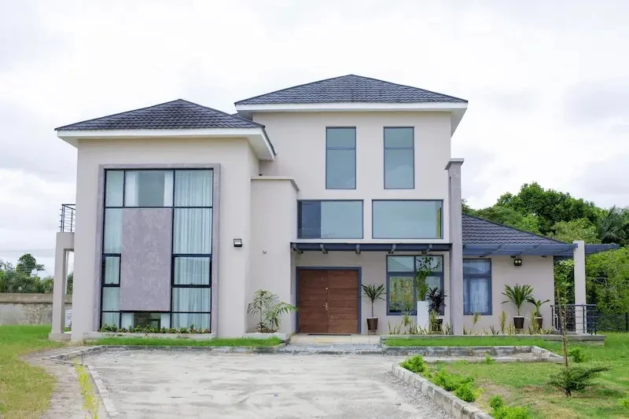

Model · 01
Residential · Lakowe Lakes
Lakowe’s Home Types page names Villa Bella, Baobab, Palm, Bay and Veta. This concept gives each one a distinct image and keeps sale status, price and specifications with the official property channel.

The Home Types catalogue
These models and images are taken from Lakowe’s public catalogue. No card implies a home is currently available for sale.




Homes and land
Lakowe’s public property archive includes both home developments and land routes. Some detail pages hand off to another property domain. This concept gives each visitor a clear choice and labels that handoff before they leave.
Next step
This concept is a visual portfolio study. It does not publish prices, take enquiries or store buyer information.